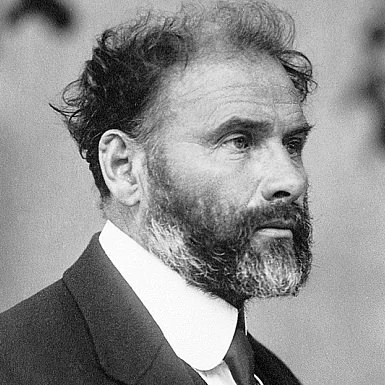

C
hathédrale
O
nirique
Artiste
Oeuvre
Billetterie
Contact
Gustav Klimt

Biographie
Oeuvre
![Mikhail Aleksandrovitch Vroubel, née le 5 mars 1856 et mort le 1 avril 1910, est un peintre russe de la fin du XIXème siècle.
De la peinture à la gravure, en passant par la sculpture et les décors de théâtre : Mikhail Vroubel s’est illustré dans tous les arts picturaux.
Il est l’un des plus grands représentants du symbolisme et de l’Art nouveau en Russie. Surnommé le Cézanne russe, il est considéré comme le précurseur de l’art moderne et de l’avant-garde russe. Pourtant, ce n’est qu’à la fin de sa vie que la critique et le public ont reconnu son talent.
Les troubles mentaux dont il a souffert à la fin de sa vie et la figure récurrente du démon dans ses œuvres ont contribué à donner au peintre une image d’artiste solitaire et maudit.Gustav Klimt est né le 14 juillet 1862 à Baumgarten en Autriche et mort le 6 février 1918 à Vienne, c’est un peintre symboliste, et l'un des membres les plus visible et actifs du mouvement Art nouveau et de la Sécession de Vienne qui a été créer par de nombreux artiste dont Gustav klimt en opposition à l'inflexibilité au changement de l’académisme viennois . C’est un dessinateur et un décorateur qui peint de nombreuses choses différentes telles que les portrait , les paysage, les sujets allégoriques ou encore les mosaïque ainsi que les tapisseries.](public/img/Gustav Klimt/Story time gustav.png)